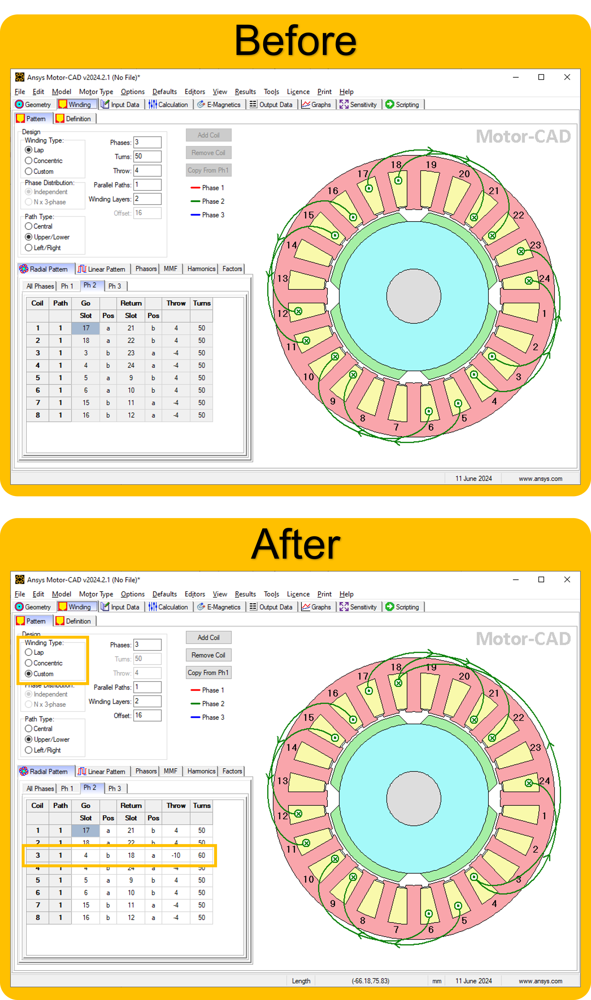

Note
Go to the end to download the full example code.
Motor-CAD E-magnetic example script#
This example provides a Motor-CAD E-magnetic script to run calculations and plot results.
This script will change model parameter values (geometry, winding pattern and materials), run magnetic calculations, extract and plot results.
Note
This script creates a partial custom winding pattern. To create a full winding pattern, parameters must be specified for all coils.
Set up example#
To set up the example, perform imports, specify the working directory, launch Motor-CAD, and disable all popup messages from Motor-CAD.
Perform required imports#
Import pymotorcad to access Motor-CAD. Import pyplot from matplotlib to display
graphics. Import os, shutil and tempfile to open and save a temporary MOT
file if none is open.
import os
import shutil
import tempfile
import matplotlib.pyplot as plt
import ansys.motorcad.core as pymotorcad
Specify working directory#
Save the file to a temporary folder
working_folder = os.path.join(tempfile.gettempdir(), "basic_examples")
try:
shutil.rmtree(working_folder)
except:
pass
os.mkdir(working_folder)
mot_name = "EMagnetic"
Launch Motor-CAD#
Connect to Motor-CAD and open a new Motor-CAD instance. To keep a new Motor-CAD instance open
after executing the script, use the MotorCAD(keep_instance_open=True) option when opening the
new instance.
print("Starting initialization.")
mc = pymotorcad.MotorCAD()
Starting initialization.
Disable popup messages#
Disable all popup messages from Motor-CAD by setting the MessageDisplayState parameter to 2.
Note
This will also disable crucial popups, for example prompts to save data or overwrite data, or dialogs used to reconcile differences in material data between the database and MOT file. In each case the default action will be taken. This setting will persist until Motor-CAD is closed.
mc.set_variable("MessageDisplayState", 2)
Set Motor-CAD to EMag#
Show the E-Magnetic context in Motor-CAD and ensure that the BPM Motor Type is set.
mc.show_magnetic_context()
mc.set_variable("Motor_Type", 0)
Set up analysis#
Setting up the analysis consists of setting the geometry, winding and material parameters, setting the calculation options and operating point, and saving the file.
Geometry setup#
Display the Scripting tab and set the Slot_Number, Tooth_Width and
Magnet_Thickness geometry parameters.
Note
To set parameter values via automation with the GUI visible, a different tab must be displayed. The Scripting tab is chosen because no parameters on this tab will be changed in this script. It is best practice to display the Scripting tab when changing input parameters by automation. This is required only if the GUI is shown.
mc.display_screen("Scripting")
mc.set_variable("Slot_Number", 24)
mc.set_variable("Tooth_Width", 6)
mc.set_variable("Magnet_Thickness", 4.5)
Winding setup#
Instead of using the automatic winding pattern, set parameters for creating a partial custom winding pattern. This example sets up an unevenly distributed winding pattern:
Set the winding type to Custom.
Set the path type to Upper/Lower.
Set the number of phases to 3.
Set the number of parallel paths to 1.
Set the number of winding layers to 2.
Define parameters for coil 3 using the
set_winding_coil()method. Set positions to a, b, c etc. when using Upper/Lower paths (when Left/Right paths are selected, L or R should be used instead). Define the third coil to have 60 turns in the second phase.
mc.set_variable("MagneticWindingType", 2)
mc.set_variable("MagPathType", 1)
mc.set_variable("MagPhases", 3)
mc.set_variable("ParallelPaths", 1)
mc.set_variable("WindingLayers", 2)
mc.set_winding_coil(2, 1, 3, 4, "b", 18, "a", 60)
the changes to the winding pattern are shown below
Materials setup#
Set the stator and rotor lamination materials. Component names are displayed in the Materials tab in Motor-CAD. Materials and their properties are defined in the Motor-CAD Material database.
mc.set_component_material("Stator Lam (Back Iron)", "M250-35A")
mc.set_component_material("Rotor Lam (Back Iron)", "M250-35A")
Calculation options#
Set the torque calculation options for a transient torque calculation with 30 points in 1 electrical cycle.
mc.set_variable("TorquePointsPerCycle", 30)
mc.set_variable("TorqueNumberCycles", 1)
Disable all performance tests except the ones for transient torque.
mc.set_variable("BackEMFCalculation", False)
mc.set_variable("CoggingTorqueCalculation", False)
mc.set_variable("ElectromagneticForcesCalc_OC", False)
mc.set_variable("TorqueSpeedCalculation", False)
mc.set_variable("DemagnetizationCalc", False)
mc.set_variable("ElectromagneticForcesCalc_Load", False)
mc.set_variable("InductanceCalc", False)
mc.set_variable("BPMShortCircuitCalc", False)
Enable transient torque calculation.
mc.set_variable("TorqueCalculation", True)
Operating point#
Set the operating point of the machine, defined by the speed, current and phase advance. Ensure that the current definition is set to Peak (index 0 of the radio group option).
mc.set_variable("Shaft_Speed_[RPM]", 1000)
mc.set_variable("CurrentDefinition", 0)
mc.set_variable("PeakCurrent", 3)
mc.set_variable("DCBusVoltage", 350)
mc.set_variable("PhaseAdvance", 45)
Save the file#
Save the file to the temporary folder and display a message that the initialisation in complete.
mc.save_to_file(working_folder + "/" + mot_name + ".mot")
print("Initialisation completed.")
Initialisation completed.
Run simulation#
Run the electromagnetic calculation in Motor-CAD (solve the e-magnetic model).
print("Running simulation.")
mc.do_magnetic_calculation()
Running simulation.
Export results to CSV file#
Export results to a CSV file. Results will be saved as Export_EMag_Results.csv in the temporary working directory. Use a try and except block to raise an error in the case of the export failing.
Use the MotorCADError object to obtain error messages from Motor-CAD and raise an Exception in
the Python script.
try:
mc.export_results("EMagnetic", working_folder + "/Export_EMag_Results.csv")
print("Results successfully exported.")
except pymotorcad.MotorCADError as e:
print("Results failed to export due to Motor-CAD Error: " + str(e))
Results successfully exported.
Get and analyse results#
Retrieve the torque and voltage output data values.
shaft_torque = mc.get_variable("ShaftTorque")
line_voltage = mc.get_variable("PeakLineLineVoltage")
print(
f"Shaft Torque: {shaft_torque:.2f} Nm\n"
f"Line-Line Terminal Voltage (peak): {line_voltage:.2f} V"
)
Shaft Torque: 3.12 Nm
Line-Line Terminal Voltage (peak): 152.26 V
Retrieve the Torque (VW) graph data. The data type for this series is E-Magnetics, so use the
get_magnetic_graph() method.
Note
When retrieving graph data points, use the Graph Viewer under Help in the Motor-CAD interface to find the series names and data types.
rotor_position, torque_vw = mc.get_magnetic_graph("TorqueVW")
Retrieve the airgap flux density graph data. This data can be found in the Graph Viewer in
Motor-CAD. The data type for this series is FEA Path, so use the get_fea_graph() method.
mech_angle, airgap_flux_density = mc.get_fea_graph("B Gap (on load)", 1, 0)
Only the most recently displayed harmonic graphs are available in Motor-CAD via the
Graph Viewer. Retrieve the torque harmonic graph data using the
get_magnetic_graph_harmonics() method.
Note
The get_magnetic_graph_harmonics() method is available from PyMotorCAD v0.7.2 onwards. The
previous workflow for extracting harmonic graph data is detailed in the PyMotorCAD v0.6
documentation.
harmonic_order, harmonic_amplitude, __ = mc.get_magnetic_graph_harmonics("TorqueVW")
print("Simulation completed.")
Simulation completed.
Plot results#
Use``pyplot`` from matplotlib (imported as plt) to plot graphs of the simulation results.
Plot the Airgap Flux Density and the Torque (VW) results as subplots in the same figure.
plt.subplot(211)
plt.plot(mech_angle, airgap_flux_density)
plt.xlabel("Mech Angle")
plt.ylabel("Airgap Flux Density")
# plt.subplots_adjust(bottom=0.19)
plt.subplot(212)
plt.plot(rotor_position, torque_vw)
plt.xlabel("Rotor Position")
plt.ylabel("TorqueVW")
plt.show()
Plot the Torque harmonic results as a bar chart.
plt.figure(2)
plt.bar(harmonic_order, harmonic_amplitude)
plt.xlabel("Harmonic order (Electrical)")
plt.ylabel("Harmonic amplitude (Nm)")
plt.show()
If you want to continue working with this instance of Motor-CAD, use the
MotorCAD(keep_instance_open=True) option when you launch Motor-CAD. If Motor-CAD is kept open,
it is useful to restore the popup messages that were disabled earlier, using the
set_variable() method.
mc.set_variable("MessageDisplayState", 0)
Total running time of the script: (1 minutes 8.128 seconds)